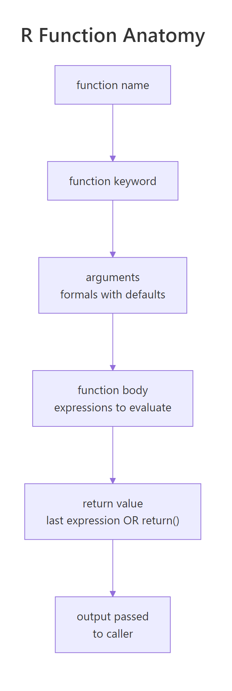
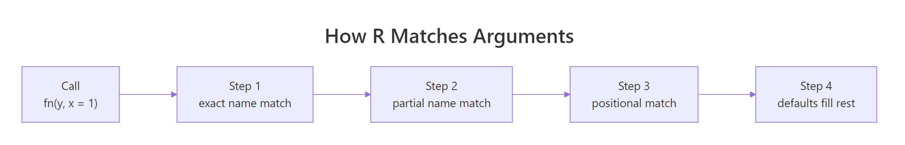
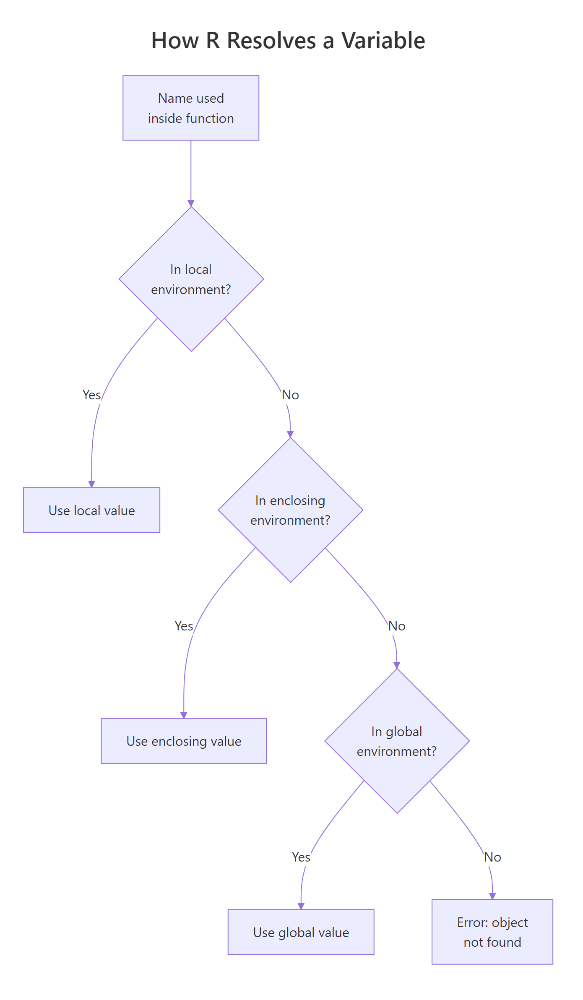

Write Better R Functions: Arguments, Defaults, Scope & When to Vectorise
An R function is a reusable block of code you call by name with arguments. Writing your own functions lets you turn repeated steps into a single command, cut bugs, and make scripts readable.
Introduction
You have written the same five lines of code three times in the same script. Now you have three places to fix the same bug. That is the signal to write a function.
A function wraps a chunk of logic behind a name. You call it with different inputs and get consistent outputs. The logic lives in exactly one place, so fixing a bug fixes it everywhere. That is the first reason to write functions. The second is readability: a call like clean_dates(sales) tells a reader what you meant, while twelve lines of string manipulation do not.
In this tutorial you will learn how R functions are built piece by piece: arguments, defaults, the body, and the return value. You will see how R decides which argument goes where when you call a function, how it finds variables using lexical scoping, how to accept any number of extra arguments with ..., and how to validate inputs so your function fails with a clear message instead of a cryptic crash.
Every code block below is runnable. Click Run and the code executes in your browser. Edit the values, run again, and watch what changes. Blocks build on one another, so run them top to bottom the first time through.
What is a function in R? (anatomy)
Every R function has four parts: a name, a list of arguments, a body, and a return value. You assign the whole thing to a name with <-, just like any other object in R.

Figure 1: The four parts of every R function: name, arguments, body, and return value.
Let's build the simplest possible function: one that squares a number. The argument is x, the body multiplies x by itself, and the last expression in the body is the return value.
What happened: function(x) { x * x } creates a function object, and <- binds that object to the name square. Calling square(5) runs the body with x = 5, and R returns the value of the last expression (x * x = 25). You now have a reusable tool you can call as many times as you want.
Function bodies can be longer. When you need intermediate values, assign them with <- inside the body. They are local to the function and disappear when the function finishes.
The variables bmi and rounded exist only while the function runs. After the call, they are gone — you cannot type bmi at the prompt and see 23.5. Only the returned value (rounded) leaves the function. Isolation like this is why functions are safer than copy-pasted scripts: local work stays local.
How do you set default arguments in R functions?
Arguments without defaults are required — omitting one throws an error. Arguments with defaults are optional; R uses the default when you do not provide a value. This lets you build flexible functions that have sensible behavior out of the box.

Figure 2: R matches arguments in four steps: exact name, partial name, position, then defaults.
Here is a function with one required argument (name) and one with a default (greeting).
Three calls, three ways to pass the same arguments. R matches arguments in a fixed order: first by exact name, then by partial name, then by position, and finally it fills in missing ones from the defaults. Passing by name is the safest style — your call keeps working even if the function's author reorders arguments later.
gr to greeting, but a future argument starting with g would silently break your code. Always write argument names in full.Defaults can reference other arguments. The default is evaluated when the function is called, not when it is defined. This is called lazy evaluation, and it lets you write defaults that depend on the user's inputs.
The tax argument defaults to price * tax_rate, so you get the right tax amount whether you override nothing, the rate, or the tax itself. You did not have to compute anything yourself. Lazy defaults let you express relationships between arguments in the signature itself.
How does an R function return values?
Every R function returns exactly one object. If the function's last expression produces a value, R returns that value — you do not need to write return(). This is called an implicit return, and it is the idiomatic R style for short functions.
The function has one expression, length * width, and R returns it. Short functions read more clearly this way. Adding return() here would only add noise.
Use explicit return() when you need to exit early, typically to handle an edge case before the main logic runs. Early returns flatten nested if/else branches and make the code easier to follow.
The guard if (b == 0) return(NA) handles the divide-by-zero case up front, and the rest of the body assumes b is safe. Compared to an if/else wrapping the whole body, the early-return style keeps the main logic at the left margin where the eye expects it.
A function can return only one object, but that object can be a list. This is how you return "multiple values" in R: bundle them into a named list.
The caller pulls out whatever they need with $name. Named lists are self-documenting — stats_out$mean is clearer than stats_out[[1]], and adding a new output later will not renumber existing ones.
What is lexical scoping in R?
Variables created inside a function are local. They exist only while the function runs and disappear when it returns. Variables from outside the function are free, and R finds them using a rule called lexical scoping.

Figure 3: How R searches environments to resolve a variable name inside a function.
First, watch how local variables vanish when the function returns:
secret lived inside local_demo() only. Outside, exists("secret") returns FALSE. This isolation is a feature: function internals cannot pollute your workspace, and your workspace cannot accidentally change function internals.
When a function uses a name it did not define locally, R searches outward — first in the environment where the function was defined, then up the chain toward the global environment.
The function does not hard-code 170 — it looks up threshold in the global environment every time it runs. Change the global, and the function's behavior changes. That is lexical scoping in action.
How do you pass extra arguments with ...?
The special argument ... (three dots, also called "dots") lets a function accept any number of extra arguments and forward them to another function. You use it when you are writing a wrapper — a function that adds a little bit of behavior around an existing one.
The wrapper does not care what arguments mean() accepts — it just collects them with ... and passes them through. You can swap mean for sum, median, or any other function, and the wrapper still works. This is how functions like lapply(), aggregate(), and most plotting wrappers stay flexible.
... to forward plot or formatting options through your function.** If your my_plot() wraps plot(), take ... and pass it on — callers can still pass col, pch, main, and every other base-R plot arg without you having to list them.How should your R functions validate inputs?
A function that silently returns nonsense is harder to debug than one that stops loudly. Check your inputs at the top of the function. If they are wrong, stop immediately with a clear message — do not let bad data flow through your logic.
The fastest check is stopifnot(). It stops execution if any of its conditions is FALSE.
stopifnot() is terse and fine for internal helpers. For functions you share, write a custom stop() with a message that explains both the problem and the fix. Commenting out the failing call keeps the notebook flow intact while still showing readers the expected error.
The error message names the argument (b), tells the user what is wrong ("is zero"), and tells them how to fix it ("Provide a non-zero denominator"). Future-you will thank present-you at 2 a.m. when this message appears in a log.
Common Mistakes and How to Fix Them
Mistake 1: Defining a function without assigning it
❌ Wrong:
Why it is wrong: function(...) { ... } creates a function object, but nothing holds a reference to it. Without <-, the object is immediately garbage-collected and has no name to call.
✅ Correct:
Mistake 2: Using = instead of <- inside the body
❌ Wrong:
Why it is wrong: = and <- both assign at the top level of a function body, but mixing them is a style error that confuses readers and tools. Named-argument calls at the call site use = (e.g., mean(x, na.rm = TRUE)), and keeping <- for assignment avoids visual collision with named args.
✅ Correct:
Mistake 3: Depending on a global variable that can change
❌ Wrong:
Why it is wrong: The function's output depends on a variable the caller might not realize they are affecting. Tests pass, then mysteriously fail when scripts run in a different order.
✅ Correct:
Mistake 4: Deep nesting instead of an early return
❌ Wrong:
Why it is wrong: Three levels of if for three guard conditions pushes the real logic far to the right and forces the reader to match braces to find the main path.
✅ Correct:
Practice Exercises
Exercise 1: Convert Celsius to Fahrenheit
Write a function celsius_to_f(c) that converts a Celsius temperature to Fahrenheit. Formula: f = c * 9/5 + 32. Test it on 0 (expect 32) and 100 (expect 212).
Click to reveal solution
Explanation: R is vectorised, so this function also works on a whole vector: celsius_to_f(c(0, 25, 100)) returns c(32, 77, 212). No loop needed.
Exercise 2: Summary statistics as a named list
Write summary_stats(x) that returns a named list containing mean, median, and sd of a numeric vector. Save the result to my_stats and access my_stats$mean.
Click to reveal solution
Explanation: Returning a named list is the standard R pattern for "multiple outputs". Callers pull out what they need by name.
Exercise 3: Clipping with defaults
Write clip(x, lo = 0, hi = 1) that returns x with any value below lo replaced by lo and any value above hi replaced by hi. Defaults should clip to the [0, 1] range. Test on c(-0.5, 0.3, 0.7, 1.5).
Click to reveal solution
Explanation: pmax(x, lo) returns the elementwise maximum, raising any value below lo up to lo. Wrapping that in pmin(..., hi) caps any value above hi at hi. Default arguments keep the common [0, 1] call short.
Exercise 4: Safe logarithm with validation
Write safe_log(x) that returns log(x) for positive x but calls stop() with a helpful message if any value in x is not positive. Include the offending values in the error message.
Click to reveal solution
Explanation: The function identifies which values are bad before calling stop(), then lists them in the message. The user now knows which inputs to fix, not just that something was wrong.
Complete Example
Let's pull everything together. You will write describe_numeric(), a function that takes a data frame, validates the input, computes summary statistics for every numeric column, and returns the results as a data frame.
The function uses nearly every idea from this tutorial: a required argument, default arguments, input validation, ... to forward arguments, local variables, early return, and a single clear return value.
The call describe_numeric(mtcars, digits = 1) overrides only the digits default; everything else uses its default. The output is one tidy data frame where each row describes one input column. You could write it to CSV, print it, or plot it — the caller decides.
Notice how the function reads as a short story: validate, select, compute, assemble, return. Each step is one small block. That is the payoff of composing small ideas (defaults, ..., validation, early return) into one readable function.
Summary
| Concept | Rule of thumb |
|---|---|
| Function syntax | name <- function(args) { body } — body's last expression is returned |
| Arguments | Required args have no default; optional args have one. Name args at call sites. |
| Defaults | Put sensible defaults in the signature; they can reference other arguments. |
| Return | Use implicit return for short functions; return() only for early exits. |
| Multiple outputs | Return a named list (or data frame) — R functions return exactly one object. |
| Scope | Locals vanish on return; free variables use lexical scoping. |
... |
Forward extra arguments to inner functions in wrappers. |
| Validation | Check inputs at the top with stopifnot() or stop() and clear messages. |
| Globals | Don't modify them from inside a function; return the new value instead. |
FAQ
Should I use = or <- for assignment inside functions?
Use <- inside function bodies. Both operators assign, but = at call sites means "named argument" (e.g., mean(x, na.rm = TRUE)). Keeping <- for assignment makes the distinction visually obvious and matches the tidyverse and Advanced R style guides.
Can I return more than one value from an R function?
No — an R function returns exactly one object. The standard pattern is to bundle the things you want to return into a named list (or a data frame), which is itself one object. The caller extracts individual pieces with result$mean, result$sd, and so on.
What's the difference between stop() and warning()?
stop() halts execution and raises an error — code after it does not run. warning() prints a warning message but execution continues. Use stop() when the problem makes the rest of the function meaningless (bad types, impossible values). Use warning() when the function can still produce something useful but the user should know about an issue (e.g., NA values were dropped).
When should I NOT write a function?
Skip the function if the code runs once and reads clearly in place, or if the "function" would just rename a single existing call (my_mean <- function(x) mean(x) adds nothing). The usual rule of thumb: once you have written the same logic three times, wrap it in a function.
References
- Wickham, H. — Advanced R, 2nd ed., Ch 6 Functions. adv-r.hadley.nz/functions.html
- Wickham, H. & Grolemund, G. — R for Data Science, 2nd ed., Ch 25 Functions. r4ds.hadley.nz/functions.html
- R Core Team — An Introduction to R, §10 Writing your own functions. cran.r-project.org/doc/manuals/r-release/R-intro.html
- Tidyverse Style Guide — Functions. style.tidyverse.org/functions.html
- R Documentation —
stopifnot(). rdocumentation.org - Dataquest — Writing Functions in R. dataquest.io/blog/write-functions-in-r
What's Next?
- R Control Flow — Conditionals and loops are the building blocks you will use inside function bodies. Review
if/else,for, andwhilebefore diving deeper into function design. - R Special Values — Learn how
NA,NULL,NaN, andInfbehave in R, so your functions handle them correctly instead of returning mystery results.